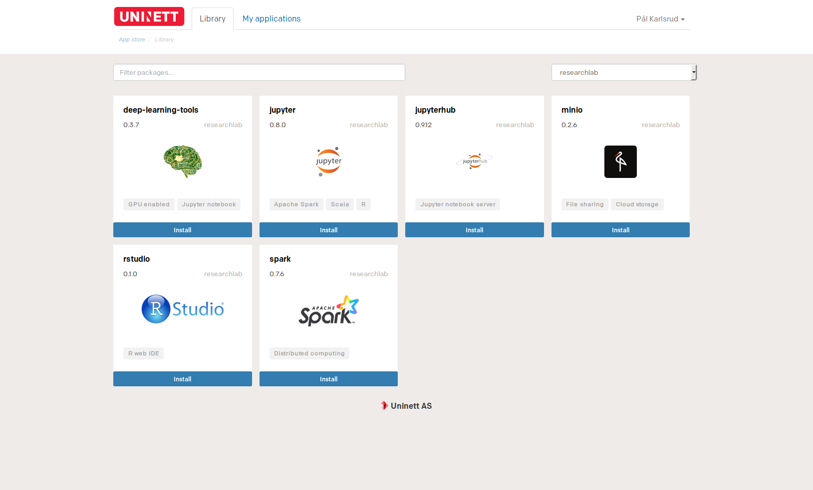
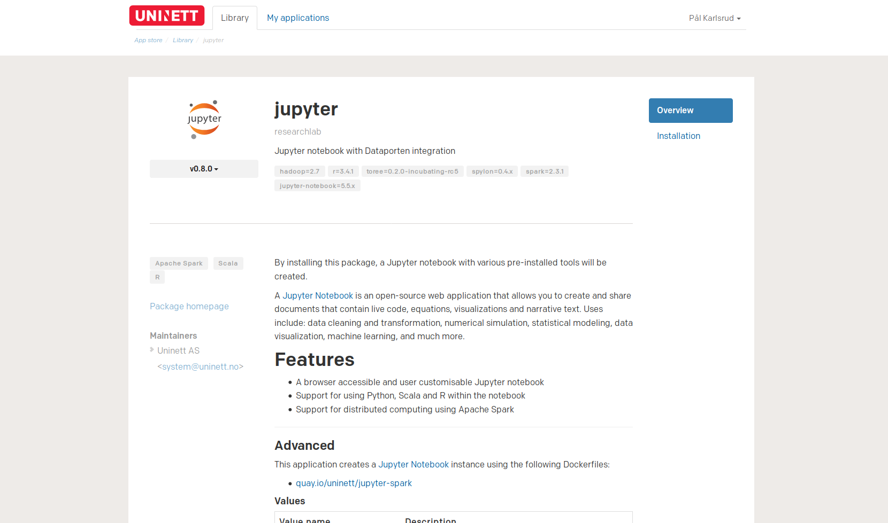
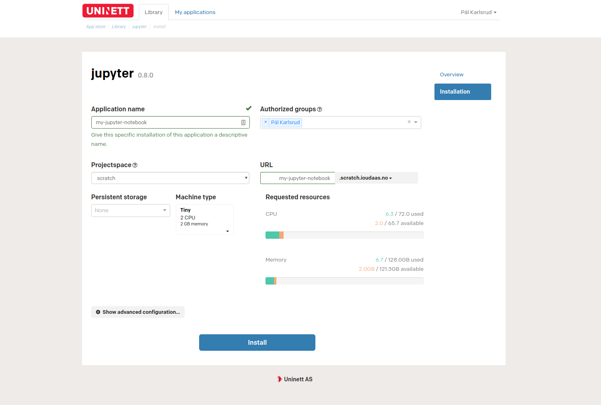
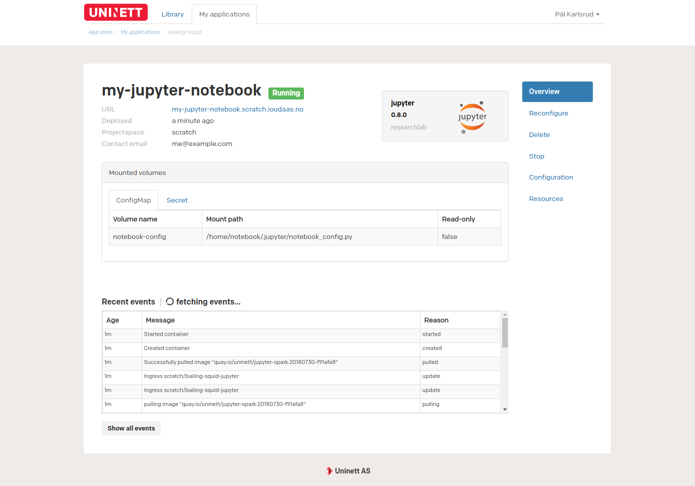
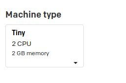
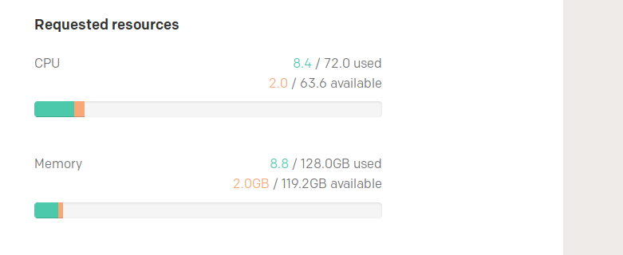

Installing a package¶
Begin by navigating to the package library. 
Here, you will be presented with a selection of different packages. To find a specific package, you can use the search bar to search for the package name, keywords or similar features.
Getting an overview of a package¶
Each package in the package list consists of two components. A description of
the package, and a Install button. By clicking on the Install-button, you will
be taken to the installation page, where you can configure and install the package.
In many cases it might be useful to visit the package overview package before installing the package, as this contains information about exactly what will be installed, and may contain useful information about the configuration of a package. To find out more about a package, click on the package description.
After navigating to the package overview page, you will be greeted with a high-level description of what the package is and what it installs. 
Near the center of the page, is the package description. This is the most important part of the package, and explains different features of the package, as well as how to configure different values. Various metadata, such as who maintains the package can be found besides the package description.
Actually installing a package¶
After reading this description, we should have all the information required to
install the package. To navigate to the package installation page, click on the
Installation-button in the menu.
 To install a package, you are required to fill in some values. Some common values are present in most packages, and the meaning of these is covered in Appendix A .
The only values that you are required to fill are the Application name and
URL fields. There are however several optional values that can be useful in
some use-cases. Some of these values reside in the Advanced configuration
section. What these values means should be covered in
Appendix A .
After filling in the Application name and URL fields, you can install the
application by clicking the Install button. You are then taken to a page
showing an overview of your newly created application.
 When the application is in a running state, the URL you entered on the installation page will appear in the application overview, and you will be able to visit and use the application.
Congratulations, you have now installed your first package! To find out how to manage your newly created application, go to the Managing applications section.
Appendix A: the meaning of each of common fields in the installation form¶
Required fields¶
Application name¶
To make it easier to determine identify applications, you are required give your application a name. This name is meant as a human friendly way of describing the application.
Projectspace¶
In many cases it is useful to group applications belonging to the same project together. By specifying a projectspace, an application will be grouped in a specific project. A projectspace may have different resources available to it, and you may not be able to install applications in all projectspaces.
Note: if you are familiar with Kubernetes namespaces, then it is worth noting that a projectspace is just a different name for a namespace.
URL¶
In order to make it easier to access each application, each application hosted behind the URL specified using the URL field.
Optional fields¶
Authorized groups¶
Sometimes it may be useful to only allow some groups access to the application. the ‘authorized groups’ selector allows you to specify which groups are allowed to access the application.
Persistent storage¶
Allows you to attach a volume that can be used to persistently store data. The enabling persistent storage section goes into more detail as to what this does.
Machine type¶
For an application to work properly, it must allocate some resources.

The machine type is used to determine how much resources will be allocated to the application. a machine type consists of three resources:
cpu -> the number of CPU(s) to allocate
memory -> the amount of RAM to allocate
gpu -> (only available in some packages) the number of GPUs to allocate
To specify how much of each resource is to be allocate, you can select
different resource flavours. Every projectspace as a different amount of
resource available. To see how much of each resource is available, look at the
Requested resources field.
Requested resources¶
The bars in the ‘requested resources’ section shows how much of each resource is available.

Orange is used to indicate how much of the resource you are about to allocate, and green indicates how much is already in use. red indicates that you are about to attempt to allocate more resources than what is available.
Common advanced values¶
Each package should have an explanation of its non-standard values on the package overview page.
dockerImage¶
In order to use custom images, it is in some packages possible to specify a custom Docker image to use when creating the application. This image should be publicly available.